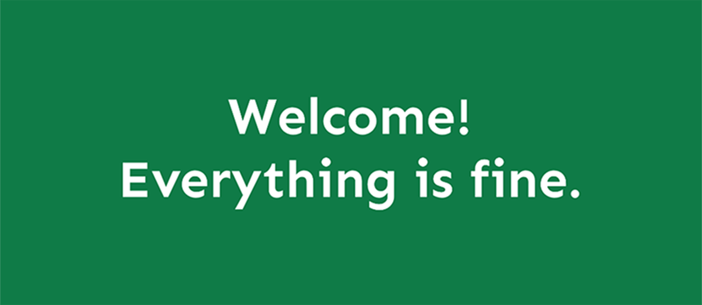
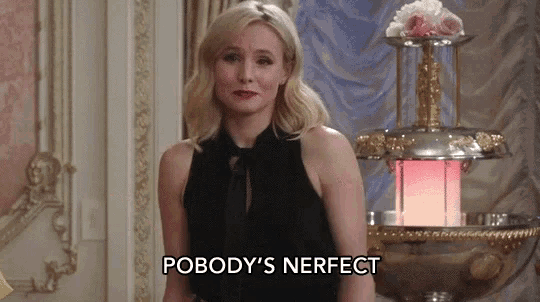

THE GOOD PLACE
O que é?
The Good Place é uma série de televisão de comédia fantasiosa criada por Michael Schur, um dos roteiristas e produtores de "sitcoms" mais influentes da TV americana. Ela estreou na NBC em 19 de setembro de 2016 e foi concluída em 30 de janeiro de 2020, após quatro temporadas e 53 episódios. No Brasil, foi transmitida pela Netflix. Saiba mais
Sinopse
Embora o enredo evolua significativamente ao longo da série, a premissa inicial segue Eleanor Shellstrop, uma mulher recebida após sua morte no "Good Place (Bom Lugar)", uma utopia altamente seletiva semelhante ao Paraíso projetada e administrada pelo "arquiteto" Michael após a morte como uma recompensa por sua vida justa. No entanto, ela percebe que foi enviada para lá por engano e deve esconder seu comportamento moralmente imperfeito do passado enquanto tenta se tornar uma pessoa melhor. Saiba mais
Inspirado na vida real
Ou melhor, em comportamentos reais. Tomar um sorvete e jogar a embalagem no chão. Entrar na frente de alguém no trânsito sem dar sinal. Furar fila.
Essas e outras atitudes irrtantes do dia a dia inspiraram o criador da série, Michael Schur, a criar um jogo com ele mesmo. Cada vez que alguém fazia algo similar na frente dele, Michael pensava: "perdeu X pontos por isso, senhor".
Isso o fez se questionar: e se existisse um mundo assim, e a gente realmente perdesse pontos com um ser superior pelas coisas erradas que a gente faz?
À parte qualquer tipo de alusão religiosa, ele pensava em algo direto, matemático. E foi assim que surgiu The Good Place. Saiba mais
Recepção
- Segundo o Rotten Tomatoes:
- A primeira temporada tem uma classificação de 92%, com base em 71 comentários, com uma classificação média de 7,74/10.
- A segunda temporada tem uma classificação de 100%, com base em 58 comentários, com uma classificação média de 8.95/10.
- A terceira temporada tem uma classificação de 98%, com base em 47 comentários, com uma classificação média de 8,35/10.
- A quarta temporada tem uma classificação de 100%, com base em 21 avaliações, com uma classificação média de 8,33/10.
- Saiba mais
Elenco principal
Muito além das telas
“Hilário, instigante e ridiculamente bobo, How to Be Perfect é uma ótima leitura para quem amou The Good Place - ou para quem quer ser uma boa pessoa.” — Jake Tapper, âncora da CNN
“Um guia divertido e barulhento para a vida moral. Se você quer se tornar moralmente melhor e não se importa em ser entretido no processo, você escolheu o livro certo.” —Jeff McMahan, professor de filosofia de Oxford
“Este livro ajudará a guiá-lo através dos enigmas morais mais espinhosos com clareza e hilaridade, e aumentará muito suas chances de acabar no... Bom Lugar.” —Kristen Bell
"[...] li tudo e posso dizer honestamente que é brilhante. How to be Perfect pega as lições deliciosas e engraçadas de The Good Place e as aplica à vida cotidiana.” —Ted Danson
No entanto, Schur não foi o único - e tão pouco o primeiro - a produzir um livro sobre o sitcom